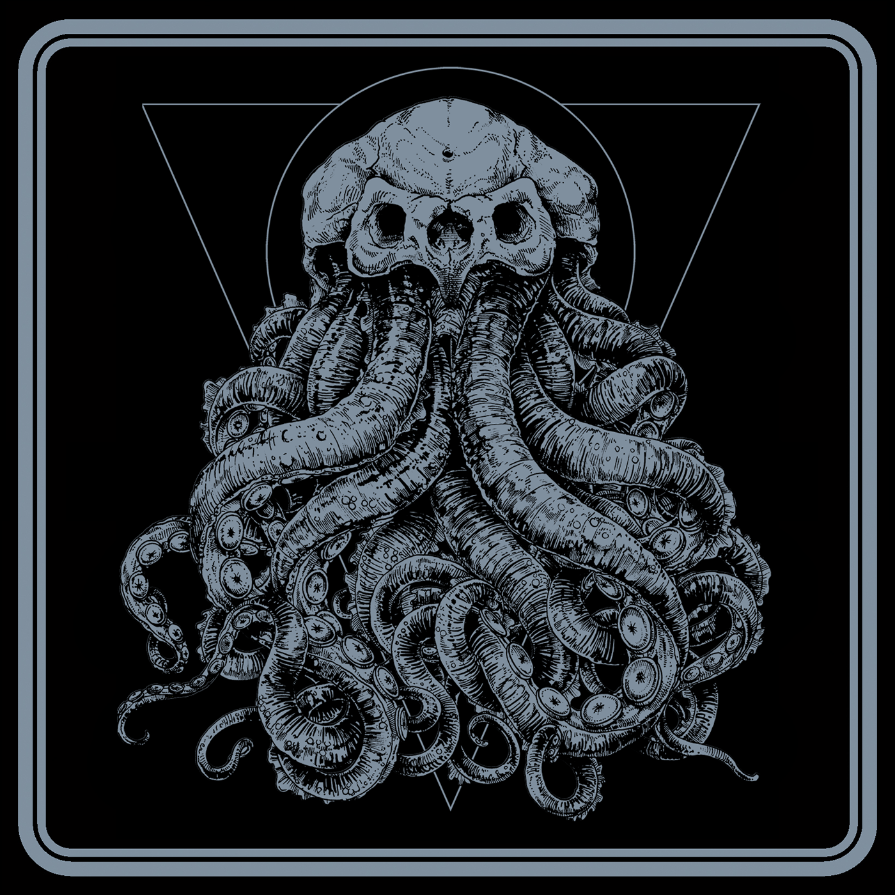

Davulda Marmur, Bass gitarda Heszu, gitar ve vokalde Bablo, gitar, synthisizer ve vokalde Kłosu’dan oluşan Polonyalı grup 2016 yılında kendi isimleri ile çıkardıkları ilk albümün ardından bu yılın hemen başında Deities isimli yeni albümlerini çıkardılar.
HP Lovecraft’ın hikayelerinden esinlendikleri yeni albümü Psychedelic Stoner/Doom/Sludge Metal olarak tanımlamak mümkün. Psychedelic Doom nasıl birşey diyerek dinlediğim albüm 2020’nin hemen başında yıl sonunda hazırlayacağım yılın en iyi albümleri arasındaki yerini aldı.🤘🏻🤘🏻🤘🏻🤘🏻
[bandcamp width=700 height=120 album=1880918224 size=large bgcol=333333 linkcol=fe7eaf tracklist=false artwork=small]